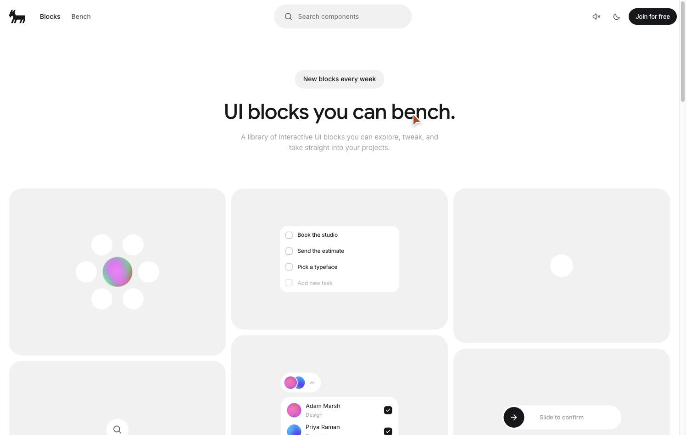
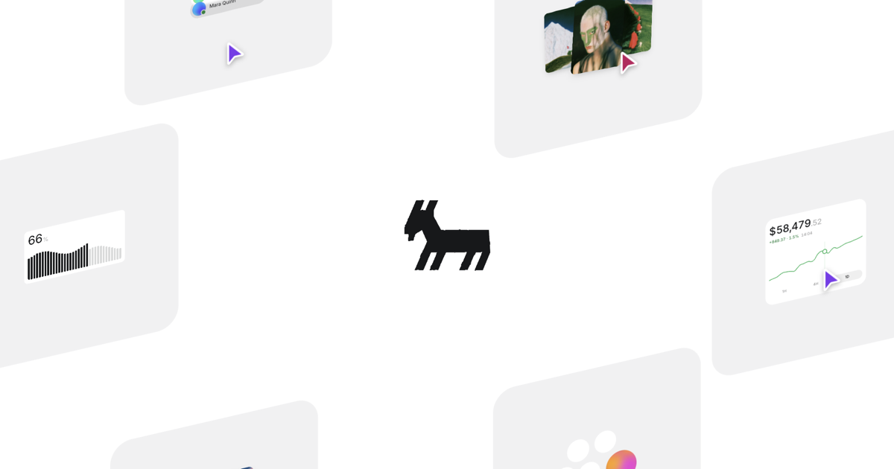

白底。标题最后一个词按 6 秒换色。下面三列圆角卡片里是原站全部 29 个可点组件。
A library of interactive UI blocks you can explore, tweak, and take straight into your projects.
白底。顶栏是山羊标、Blocks / Bench、搜索和 Join。标题 46px / 500，最后一个词在 tune / bench / share / take 之间切换，并带上各自的颜色。下面是三列圆角 28px 的 surface 卡片，里面是正在运行的组件。
原站共 29 张卡片，本页按同一三列网格全部复刻，均可指针操作。Bench（#bench）是点阵无限画布，不在这一发明里。原站 GitHub 仓库私有；Code 页提供 MIT 的 Usage / CSS，实现按那些说明和现场交互。

不是三维。卡片是 DOM。标题词用字母交错进入：y: -0.5em → 0，blur(5px) → 0，弹簧 stiffness 420 / damping 30 / mass 0.9，字母间隔 18ms。词表与色值抄自原站脚本。
卡片底 rgba(23, 24, 26, .06)，圆角 28px，列间距 12px。1495 视口下每卡宽 472px。层级靠浅底上的浅灰面，不用投影。
关掉「实机」后，卡片不再响应指针，用来对照静帧目录为什么不够。卡片标题保持 13px、贴在左下角：弱化名称，把注意力留给正在工作的控件。

| 项目 | 取值 |
|---|---|
| 背景 / 墨 | #fff / #17181a |
| 标题 | 46px / 48.76px，字重 500，字距 −0.92px |
| 副文 | 15px / 22.5px，#a3a29c |
| 胶囊 | 14px / 500，padding 12px 18px，圆角 999，底 rgba(23,24,26,.06) |
| 轮换词 | tune #2231dd · bench #b8431c · share #7c3aed · take #17181a；间隔约 6s |
| 卡片 | 宽 472px，圆角 28px，间距 12px，三列，29 张 |
#copy#2231dd / #b8431c / #7c3aed / #17181a。字母交错 18ms，进入 translateY(-0.5em) + blur(5px)。周期约 6s。#gridrgba(23,24,26,.06)，圆角 28px。29 张均可指针操作。名称 13px，贴左下角，不与控件抢层级。#magnet-selectexp。远芯片每步晚 22ms。#seek#escapeflee=(1-d/r)^2。固定次数后自己认输。键盘从不移动。#liq-create#slide-confirm#tilt#slosh#checklist#sound